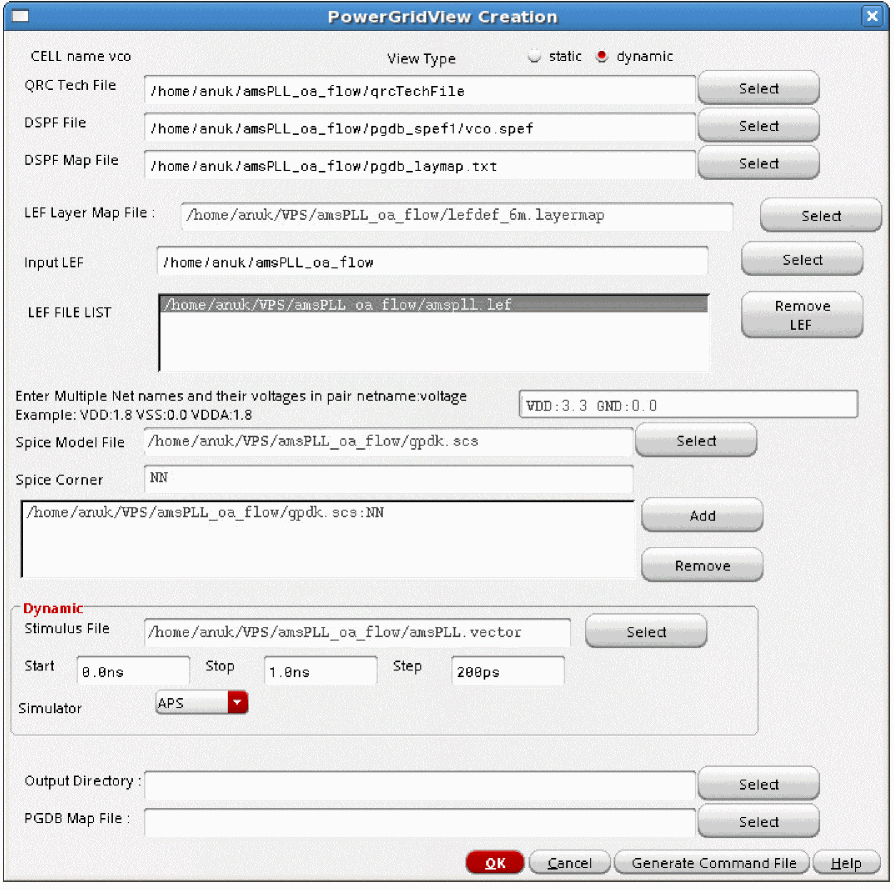
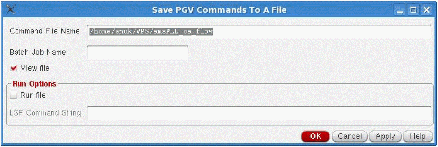

10
Power-Grid View Creation
- The Power-Grid View Flow
- Data Requirements and Flow for PGV Creation
- Creating Power-Grid Views
- Writing Out a PGV Command File
- Outputs of PGV Generation
The Power-Grid View Flow
Voltus-Fi-L provides the ability to create power-grid views (PGVs) of an analog design block that can be used in Voltus for mixed-signal analysis. PGVs contain the following:
- A model view of the design
- Information about the power ports of the cell or block
- Information about the internal power grid, intrinsic capacitance, and the tap current distribution within the cell or block
PGVs provide an accurate characterization of capacitance and currents, and power-grid extraction. Voltus uses these views to model the power rail and power distribution information for each instance of the cell in the design for dynamic or static full-chip power-grid analysis.
For more information about PGVs, refer to the “Power-Grid Library Generation” chapter in the Voltus IC Power Integrity Solution User Guide.
Data Requirements and Flow for PGV Creation
The following table shows the required inputs for generating power-grid views in Voltus-Fi-L. The inputs are categorized into the following: 1) from the design; and 2) from the user.
The following diagram illustrates the flow of PGV creation in Voltus-Fi-L.
Figure 10-1 Power-Grid View Generation Flow in Voltus-Fi-L
Creating Power-Grid Views
To create PGVs in Voltus-Fi-L, perform the following steps:
- In the Voltus-Fi-L console, select IR/EM Analysis – Create Power Grid View.
-
The PowerGridView Creation form opens. This form is shown below.
Figure 10-2 The PowerGridView Creation Form - The CELL name field is already populated with the name of the cell for which the power-grid view is being created. This is chosen from the open extracted view.
- In View Type, choose either static or dynamic, to specify the type of analysis for which you want to generate the view.
- Select the QRC Tech File, which is the name of the Quantus QRC technology file that will be used for PGV generation.
- Select the DSPF File, which is the third party or the xDSPF netlist file that is to be imported.
-
Select the DSPF Map File, which is the layermap file that has the layer type and layer stack information of the DPSF file, from the top-most layer to the bottom-most layer. The Layer type column specifies the type of layer: metal, via, or local; while the Process layername column specifies the name of the layer. To view an example, see DSPF Layermap File in the “File Formats” chapter.
- Specify the LEF Layer Map File, which contains information for mapping the layer names in the LEF file to the layer names in the technology file. To view an example, see LEF Layermap File in the “File Formats” chapter.
- Select the technology LEF files and the Macro LEF files in the Input LEF field. The technology LEF files contain the LEF information for the technology data, and the Macro LEF files contain the LEF data for the design. The selected filenames will appear in the LEF FILE LIST. Click Remove LEF to remove any file from the LEF FILE LIST.
-
In the Enter Multiple Net names and their voltages in pair netname:voltage field, type the names of the nets and their corresponding voltages in the specified format. For example,
VDD:1.8 VSS:0.0. You can specify multiple net names separated by a space. -
To specify the Spice Models information, perform the following steps:
- Select the Spice Model File used by the SPICE netlist.
- Type the corresponding Spice Corner to be used from the model file.
- Click Add to add the SPICE model – SPICE corner pair to the table.
- Continue till all models and their corresponding corners are specified.
- Click Remove to remove a pair from the table.
-
The Dynamic group box is activated only when you choose the View type as dynamic. In this group box, provide the specifications for dynamic PGV generation.
- Select the Stimulus File, which is the input file for the simulator. Choose this option to specify the vector information to be used for the simulation.
-
Specify the Start, Stop time in nanoseconds (
ns), and Step Size in picoseconds (ps).This specifies the simulation start time, stop time, and step size. The default value of step size is 200ps. - Choose APS in the Simulator cyclic field.
-
Select the Output Directory to write the output data. By default, the power-grid views are stored in the work directory.
- Select the PGDB Map File, which is the layermap file that contains the mapping information, to map the xDSPF layer names that are written in the simulation database to the layer names in the technology file. To view a sample file, see PGDB Layermap File in the “File Formats” chapter.
- Click OK.
Writing Out a PGV Command File
To generate a batch mode command file for PGV generation, follow these steps:
-
In the PowerGridView Creation form, click Generate Command File. The Save PGV Commands To A File form opens. This form is shown below.
Figure 10-3 PGV Command File Generation -
In this form, specify the Command File Name. If the command filename is not specified, the software either uses
<Batch job Name>.cmdas the default command file name, or if the batch job name is not provided, then it usesvsaPGVBatch.cmdas the default command filename. - Specify the Batch Job Name, which is a unique job name to distinguish between different jobs. This allows you to run multiple command files – generated by different job names – in the same working directory.
-
Click View file to view the command file. This option is selected by default. If you do not want to view the command file, you can change the default selection of this option by setting the
_vsaUncheckViewFileenvironment variable totrue. For details, see _vsaUncheckViewFile in the “Environment Variables” chapter. - In the Run Options group box, click Run file to run the generated command file in the background.
-
Specify the Local Server Farm or the LSF Command String, which is the name of the wrapper string command that will launch the tool in the batch mode. For example, you can specify bsub -q lnx64 as the LSF command string. You can also specify the LSF string by using the environment variable,
_vsaLSFMachineString.When this environment variable is set, the LSF Command String field is pre-filled with the specified command. For details, see _vsaLSFMachineString in the “Environment Variables” chapter. - Click OK.
Outputs of PGV Generation
Following are the outputs of PGV generation in Voltus-Fi-L:
- A binary database that contains the following:
- Text report and summary file with detailed information about the power-grid views.
Sample Batch Command file
A sample PGV batch command file is shown below:
;vsa batch mode command file
;commands for PGV generation
_vsa_testbench_lib_cell_view "amsPLL" "TB1_vco_single" "schematic"
_vsa_extracted_lib_cell_view "amsPLL" "vco" "av_R"
_vsa_pgv_output_directory "dyn_pgv"
_vsa_pgv_tech_file "qrcTechFile"
_vsa_pgv_lef_layer_map_file "leflayermap"
_vsa_pgv_pgdb_map_file “pgdb.map”
_vsa_pgv_net "vdd!" " 1.2"
_vsa_pgv_net "gnd!" "0.0"
_vsa_pgv_lef_files "amspll.lef tech.lef"
_vsa_pgv_dynamic_options "amspll.vector" "0.0ns" "120.0ns" "250ps"
_vsa_pgv_spice_model "cln90g_lk.l" "TT tt_hvt"
_vsa_pgv_spice_model "cln90g_sr.l" "TT_sr"
_vsa_pgv_dspf_file "vco.xdspf"
_vsa_pgv_dspf_layermap "layermap_dspf"
_vsa_create_pgv
exit
Return to top